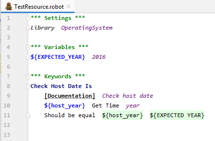

Robot Framework a testowanie aplikacji webowych
Kim jestem?
Agnieszka Malek / https://www.linkedin.com/in/agnieszka-j-malek/- Test Automation Squad Group Leader
- Magister Chemii
- Mama dwójki dzieci
- Entuzjastka myślenia wizualnego
Agenda
- Weryfikacja instalacji - step by step
- Troszkę teorii
- Więcej praktyki
- Czym jest testowanie?
- Dlaczego automatyzujemy testy?
- 2xD - Modele tworzenia testów automatycznych
- Do rzeczy! Czym jest Robot Framework?
- Jak wygląda architektura testów robotowych?
- No to czas poznać Selenium - DEMO
- To na co wszysy czekali - ćwiczenia
Co znaczy testowanie?
Testowanie jest procesem ewaluacji systemu lub jego komponentu/komponentów w celu
weryfikacji czy spełnia on określone wymagania czy nie.
Dlaczego automatyzujemy testy?
- Automatyczne testowanie oszczędza pieniądze i czas
- Zwiększa pokrycie testami
- Znacznie poprawia dokładność
- Robi to czego nie można osiągnąć tylko testowaniem manualnym
- Pomaga zarówno deweloperom i testerom
Pobawmy się w matematykę!
14,000 unit testów
19,000 testów funkcjonalnych
sum = 33,000 testów
jeśli jeden tester zarabia $25/h
i jest w stanie przeprowadzić 50 testów/h
$$\frac{33 000}{50} * 25 = 660 * 25 $$
$$= 16 500\$$$
jeśli tester automatyzujący zarabia $55/h i implementuje 5 testów/h
33,000 automatycznych testów 6600 godzin
to jest 363000$
...ale
$$\frac{363 000}{16 500} = 22 egzekucje$$
$$ 22 egzekucje $$
to znaczy że automatyzacja płaci sama za siebie
Analiza logów - przykład z życia
1780 skompresowanych plików w snapshotcie
461 definicji plików zapisanych w specyfikacji w pliku csv
8 różnych komponentów do sprawdzenia
...i spróbuj się nie pomylić
Jak długo może to potrwać?
Dla testu automatycznego: 1 sekunda 615 milisekund - 3 sekundy 562 milisekundy
Wyzwanie: Spróbujcie zrobić to szybciej manualnie
Test Driven Development
Keyword Driven Development
Acceptance Test Driven Development
Behavior Driven Development
Test Driven Development
Kiedy tworzysz jakąś funkcję, najpierw zdefiniuj przykłady oczekiwanych rezultatów dla wybranych danych wejściowych. Gdy już stworzysz funkcję, sprawdź ją pod kątem oczekiwanych rezultatów.
Keyword Driven Development
W testowaniu sterowanym zwrotami kluczowymi, każde słowo klucz (keyword) odpowiada
konkretnej akcji takiej jak kliknięcie myszką, wybranie elementu z rozwijanego menu,
otwarcie lub zamknięcie okna itp. W KDD test jest sekwencją operacji zapisanych za pomocą
słów kluczy, symulujących akcje użytkownika wykonywane na testowanej aplikacji.
Acceptance Test Driven Development
Testy akceptacyjne służą uzyskaniu potwierdzenia, że opragramowanie jest odpowiedniej jakości.
Analogicznie do TDD testy akceptacyjne powinny być zdefiniowane przed utworzeniem danej
funkcjonalności. Kryteria akceptacyjne natomiast sa kryteriami, które dany system lub
komponent musi spełnić, żeby został zaakceptowany przez użytkownika lub klienta.
Behavior Driven Development
Konwencją wykorzystywaną w BDD jest tworzenie struktury testów za pomoca języka naturalnego.
Idea ta tak naprawdę służy usprawnieniu współpracy między klientami, testerami i developerami i
sprawia, że testy stają się zrozumiałe i czytelne dla wszystkich.
Do rzeczy! Czym jest Robot Framework?
Zarys historyczny
- Robot Framework został stworzony w Nokii (Nokia Siemens Networks)
- W roku 2008 stał się projektem open source (release 2)
- Duża społeczność na GitHubie
Jak wygląda architektura testów robotowych?
Struktura pliku testowego
- Plik jest podzielony na sekcje
- Składnia
- Space separated format - oddzielanie spacjami
- Wcięcia mają znaczenie (jak w Pythonie)
- Puste linie są ignorowane
- Ilość spacji jest bardzo ważna
- Komentarze oznaczamy - #
Ustawienia (*** Settings ***)
Zmienne (*** Variables ***)
Testy (*** Test Cases ***)
Słowa klucze (*** Keywords ***)
Resources
Czego tu brakuje???
*** Test Cases ***
Odpalanie testów - cmd
Robot Framework posiada bardzo dużo opcji, które pozwalają nam na kontrolę i dostosowanie egzekucji testów
Przykłady
Oczywiście możemy stosować kombinacje wielu argumentów w jednej komendzie
Chcesz wiedzieć więcej? Zajrzy tu: Robot Framework Advanced Guide - Command Line Options
No to czas poznać Selenium - DEMO
To na co wszyscy czekali - ćwiczenia
Ćwiczenie 1 - matematyka
- Dodaj do siebie dwie cyfry
- Zweryfikuj rezultat
Ćwiczenie 2 - template
- A przygotujesz template dla pierwszego ćwiczenia? :)
- Pamiętaj, żeby podać różne dane wejściowe
Ćwiczenie 3 - Selenium wikipedia
- Otwórz przeglądarkę na stronie http://en.wikipedia.org/
- Znajdź pole wyszukiwania
- Wprowadź Robot_Framework w pole wyszukiwania
- Kliknij przycisk wyszukiwania
- Zweryfikuj czy wyświetlona strona wyświetla tekst "Robot Framework is a generic test automation framework"
Ćwiczenie 4 - Gherkin style
Zrobiłaś ćwiczenie drugie?
Świetnie
To teraz zrób to samo wykorzystując składnię BDD
Ćwiczenie 5 - Template
- No to teraz fajnie by było poćwiczyć wykorzystanie templatu
- Wymyśl różne hasła do wyszukiwania i sprawdź czy wikipedia znajdzie to czego oczekujesz
- Możesz też sprawdzić przypadki nieprawidłowe :)